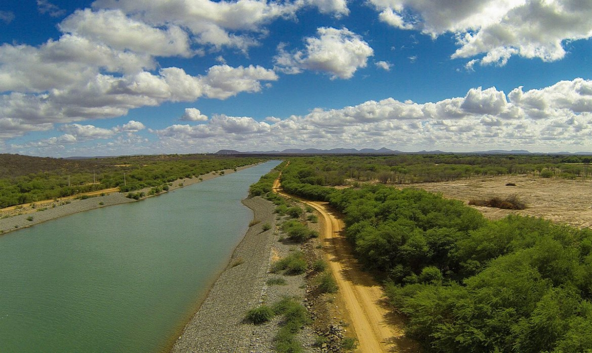
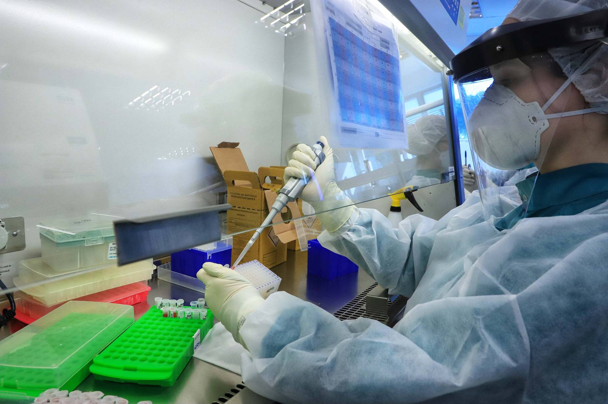

|
Projetos |
|
|
• Com metodologia inédita, PNUD apoia SUDENE no desenvolvimento sustentável dos territórios de bacias hidrográficas
A Superintendência de Desenvolvimento do Nordeste (SUDENE) está elaborando um Plano de Ação para ampliar o impacto de
políticas públicas voltadas ao desenvolvimento sustentável dos territórios das bacias hidrográficas dos rios Parnaíba,
São Francisco e nos municípios do Projeto de Integração do Rio São Francisco.
|
|
|
O objetivo é estimular atividades econômicas de mais valor agregado e capacidade de inovação. O plano tem como base
conceito desenvolvido pela Universidade Harvard e pelo Instituto de Tecnologia de Massachusetts,
segundo o qual alguns setores produtivos são chave por estabelecer importantes conexões com as demais atividades econômicas,
induzindo ao desenvolvimento sustentável e à geração de renda.
O Plano de Ação será orientado pela Estratégia de Desenvolvimento Regional Inteligente (EDRI),
metodologia que conduz a atual política de desenvolvimento regional da União Europeia. A abordagem, no entanto,
será adaptada para as realidades econômica, social e ambiental da área de atuação da SUDENE.
|
|
 |
|
|
|
• Paraná amplia ações de ciência e inovação para o desenvolvimento regional e sustentável
A Superintendência Geral de Ciência, Tecnologia e Ensino Superior promoveu um painel sobre o
papel das agências de inovação das universidades estaduais do Paraná. Entre vários assuntos, a programação abordou as
interações e articulações entre a comunidade acadêmica e o setor produtivo. O encontro reuniu gestores dos Núcleos de Inovação Tecnológica (NITs) das sete instituições estaduais de ensino superior,
além de professores, pesquisadores, estudantes e empreendedores de projetos inovadores e de base tecnológica
(nascentes ou que estejam em operação).
|
|
|
 |
|
A coordenadora do NIT da Universidade Estadual do Paraná (Unespar), professora Roselis Natalina Mazzuchetti,
destacou a importância de estimular a cultura empreendedora nas diversas áreas do conhecimento.
“O objetivo é fomentar projetos inovadores relacionados às linhas de pesquisa e aos cursos de graduação da instituição,
considerando o interesse público e mercadológico e a viabilidade das iniciativas”, explicou.
|
|
|
|
Seguindo a mesma linha, a Agência de Inovação Tecnológica (Aitec) da Universidade Estadual do Norte do Paraná (UENP)
planeja implantar, em 2022, uma incubadora de empresas e um programa de empreendedorismo acadêmico. A ideia é incentivar
estudantes de graduação e pós-graduação a desenvolverem projetos de inovação e pesquisa voltados à cooperação.
|
|
| | |